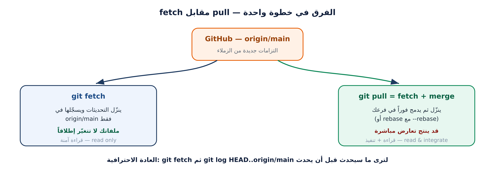

push)، أو رفع على فرع لم يُدمج، أو نسختك لم تُحدَّث (pull)هدف اليوم ليس تنفيذ أوامر، بل قراءة مخرجاتها: أين أنا؟ ما الجديد؟ ما الفرق؟ من فعل هذا؟

$ git switch main $ git fetch origin remote: Enumerating objects: 9, done. From https://github.com/<org>/class-team-hub a1b2c3d..f9e8d7c main -> origin/main $ git status -sb ## main...origin/main [behind 2] $ git log --oneline HEAD..origin/main f9e8d7c feat(members): add card for leen-docs 3c7d9e1 Merge pull request #7 from nour-dev/feature/nour-card
behind 2 = عند الزملاء التزامان لم تجلبهما بعد| الحالة في git status | المعنى | الأمر السليم |
|---|---|---|
| ahead 2 | عندك التزامات غير مرفوعة | git push |
| behind 3 | عند الزملاء التزامات لم تجلبها | git pull --ff-only |
| ahead 1, behind 3 | التاريخان افترقا | git pull --rebase |
| diverged | افتراق ثم محاولة دفع | pull --rebase ثم push |
تصفية الحالة: git status -sb — سطر واحد يخبرك بكل شيء، قبل أي أمر آخر.
# 1) دمج سريع (لا عمل متبادل): $ git merge --ff-only origin/main Updating a1b2c3d..f9e8d7c Fast-forward # 2) دمج بعقدة (عمل متبادل): $ git merge feature/omar-qa-card Merge made by the 'ort' strategy. 1 file changed, 9 insertions(+) # 3) الدمج المضغوط: $ git merge --squash feature/sara-fixes Squash commit -- not updating HEAD $ git commit -m "feat(ui): improve member card layout (#9)"
| الاستراتيجية | شكل التاريخ | متى نستخدمها |
|---|---|---|
| Merge commit | فروع وعُقد واضحة | فرع طويل بمهام متعددة |
| Squash and merge | التزام واحد نظيف | فرع صغير أو إصلاحات متتابعة |
| Rebase and merge | خط مستقيم بلا عُقد | تاريخ خطّي للمراجعة |
القاعدة: rebase للفروع الشخصية فقط، merge للفروع المشتركة. إعادة تشكيل فرع يعمل عليه زميل تُتلف عمله.
$ git log --oneline --all --graph --decorate -8 # شجرة الفريق $ git log -p -- data/members/leen-docs.json # تاريخ ملف واحد $ git blame data/members/leen-docs.json # من كتب كل سطر $ git shortlog -sn --all # ترتيب المساهمين $ git diff main..feature/x --stat # ما سيدخل فعلاً
data/members-index.json| الحالة | الأمر الصحيح | يحذف عملاً؟ |
|---|---|---|
| تعديل غير مُلتزم | git restore <file> | نعم (هو المقصود) |
| ملف مُمرَّر للمرحلة خطأً | git restore --staged <file> | لا |
| آخر التزام لم يُرفع | git commit --amend | لا |
| التزام مرفوع خاطئ | git revert <sha> | لا (يعكسه) |
| تبديل فرع وعملك ناقص | git stash ثم git stash pop | لا |
| حذفت شيئاً ولا تدري | git reflog ثم switch -c rescue | لا |
$ git revert --no-edit 8de1e7a [main 6f7e8d9] Revert "feat(ui): change card colors" $ git log --oneline -3 6f7e8d9 (HEAD -> main) Revert "feat(ui): change card colors" 2b3c4d5 docs(readme): add FAQ section 8de1e7a feat(ui): change card colors
revert ينشئ التزاماً جديداً يعكس الأول ← التاريخ يبقى صحيحاً لكل من سحب المشروعreset --hard يحذف الالتزامات ← من بنى عليها عملاً ينهار مشروعه$ git reflog -5 6f7e8d9 HEAD@{0}: revert: Revert "feat(ui): change card colors" 2b3c4d5 HEAD@{1}: commit (amend): docs(readme): add FAQ section 1e1682a HEAD@{2}: commit: docs(readme): add faq 5aaeef2 HEAD@{3}: reset: moving to origin/main $ git switch -c rescue 5aaeef2 # استرجاع أي حالة سابقة
reflog سجل محلي لا يُرفع إلى GitHub — فهو ينقذك على جهازك، لكنه لا ينقذ زميلاً على جهاز آخر.
$ git branch --merged main # الفروع التي اندمج عملها فعلاً feature/ali-card feature/leen-card * main $ git branch -d feature/ali-card feature/leen-card Deleted branch feature/ali-card (was 1a2b3c4). $ git fetch --prune - [deleted] (none) -> origin/feature/ali-card
احذف الفروع المدموجة فقط. الفرع غير المدموج يحتاج -D (حذف قسري) — لا تستخدمه إلا بعد التأكد أن عملك محفوظ أو مرفوع.
main عندك محدَّث ومساوٍ لـ origin/mainstash وamend وrevert وreflogتذكّر: التعارض ليس خطأً. هو رسالة من Git تقول «هنا تعديلان، اختر أنت» — والجلسة القادمة تجعل هذا الاختيار سهلاً.